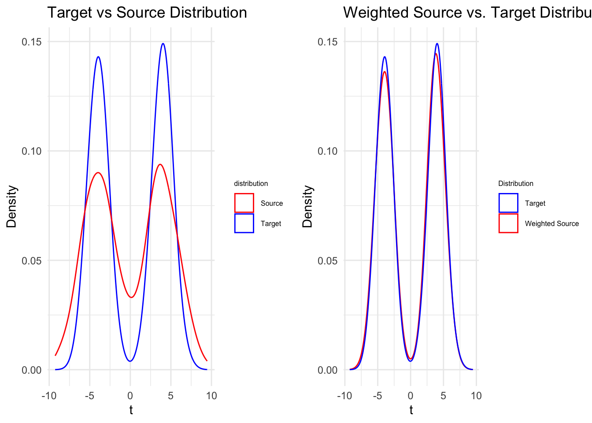

Goal: estimating \(w = f^{(0)} / f^{(1)}\) from \(\{x_{i^{(k)}}\}^{n_k}_{i=1} \overset{\mathrm{iid}}{\sim} f^{(k)}\)
Estimator(Kpotufe, 2017): \(\tilde{w} = \frac{\hat{\mathbb{P}}^{(0)}(B(x, r))}{\hat{\mathbb{P}}^{(1)}(B(x, r))} = \frac{n_{0}^{-1}\sum_{i=1}^{n_0}\mathbb{1}(||x - x_{i}^{(0)}||_2 \leq r)}{n_{1}^{-1}\sum_{i=1}^{n_1}\mathbb{1}(||x - x_{i}^{(1)}||_2 \leq r}\); \(\hat{w}(x) = \tilde{w}(x) \mathbb{1}(\hat{\mathbb{P}}^{(1)}(B(x, r)) \geq \alpha)\)
Theorem 3.4.1 (Kpotufe, 2017):
With \(r\) \(\asymp [\frac{log(n_0 \bigwedge n_{1})}{n_0 \bigwedge n_1}]^{\frac{\beta}{2\beta + d}}\), \(\alpha \asymp \frac{log(n_0)}{n_0}\), we have:
\(\mathbb{E}_{X \sim \mathbb{P}^{(1)}} |\hat{w}(X) - w(X)| \lesssim_{\mathbb{P}}[\frac{log(n_0 \bigwedge n_{1})}{n_0 \bigwedge n_1}]^{\frac{\beta}{2\beta + d}}\)
Compact Support: \(supp(\mathbb{P}^{(1)})\) is compact in \(\mathbb{R}^{d}\)
Bounded Density Ratio: \(||f||_{\infty} \leq B < \infty\)
\(\beta\)-Hölder class: \(|w(x) - w(x')| \leq L||x - x'||_{2}^{\beta}\) with \(\beta \in (0, 1]\)
# ----------------------------
# 1) Setup
# ----------------------------
set.seed(123) # for reproducibility
D <- 20
v <- seq_len(D) # v = (1, 2, ..., 20)
n_source <- 1000
n_target <- 1000
# ----------------------------
# 2) Define mixture distributions
# ----------------------------
# Q (target): t ~ 0.5*N(-4, 1) + 0.5*N(4, 1)
# P (source): t ~ 0.5*N(-4, 4) + 0.5*N(4, 4)
# A helper function to sample from a 2-component mixture
# with equal weights 0.5 and 0.5, given:
# means = c(m1, m2), sds = c(sd1, sd2), and total n
mix_2_gaussian <- function(n, means, sds) {
# Step 1: Decide which component each point comes from
comps <- sample.int(2, size = n, replace = TRUE, prob = c(0.5, 0.5))
# Step 2: For each chosen component, draw from corresponding Normal
rnorm(n, mean = means[comps], sd = sds[comps])
}
# ----------------------------
# 3) Generate the scalars t
# ----------------------------
target_t <- mix_2_gaussian(
n = n_target,
means = c(-4, 4),
sds = c(1, 1)
)
source_t <- mix_2_gaussian(
n = n_source,
means = c(-4, 4),
sds = c(2, 2) # because variance=4 => sd=2
)
# ----------------------------
# 4) Embed each scalar in D-dimensional space: X = t * v
# ----------------------------
X_target <- outer(target_t, v) # n_target x D matrix
X_source <- outer(source_t, v) # n_source x D matrix
# Optionally, convert to data frames:
df_target <- as.data.frame(X_target)
df_source <- as.data.frame(X_source)
# Now you have (X_source, X_target) with dimension 20,
# each lying on the line spanned by v (since x = t*v).
f_target <- function(t) {
0.5 * dnorm(t, mean = -4, sd = 1) +
0.5 * dnorm(t, mean = 4, sd = 1)
}
f_source <- function(t) {
0.5 * dnorm(t, mean = -4, sd = 2) +
0.5 * dnorm(t, mean = 4, sd = 2)
}
# True weight function w(t)
w_fun <- function(t) {
f_target(t) / f_source(t)
}We generate multi-Gaussian distribution to simulate non-parametric data. Dimension of data \(d\) is 20; sample size of target data \(n_0\) is 1000; and sample size of source data \(n_1\) is 1000.
All the parameters we use are from Kpotufe(2017).
compute_histogram_ratio <- function(x, target_data, source_data, r) {
# x is a numeric vector of length d
# target_data: n0 x d
# source_data: n1 x d
# r: numeric radius
n0 <- nrow(target_data)
n1 <- nrow(source_data)
# Indicator sum for target_data
# 1/ if distance <= r, 0/ otherwise
# We'll compute Euclidean distance from x to each row in target_data
dist_target <- apply(target_data, 1, function(xi) sqrt(sum((xi - x)^2)))
indicators_target <- (dist_target <= r)
numerator <- mean(indicators_target) # (1/n0) sum_i 1(...)
# Indicator sum for source_data
dist_source <- apply(source_data, 1, function(xi) sqrt(sum((xi - x)^2)))
indicators_source <- (dist_source <= r)
denominator <- mean(indicators_source) # (1/n1) sum_j 1(...)
# Avoid division by zero if the denominator = 0
if (denominator == 0) {
ratio <- Inf # or define a small offset to avoid Inf, e.g. ratio <- numerator / (denominator + 1e-10)
} else {
ratio <- numerator / denominator
}
# To obtain the re-weighted test vector
alpha = log(n0) / n0
estimate_reweight <- ifelse(
denominator >= alpha, ratio, 0
)
list(ratio = ratio,
estimation = estimate_reweight)
}
target_sample_n = 1000
source_sample_n = 1000
min_sample = min(target_sample_n, source_sample_n)
# Choose parameters
r = 45
test_n = 1000
set.seed(335)
test_t <- mix_2_gaussian(
n = test_n,
means = c(-4, 4),
sds = c(2, 2)
)
# Embed in D dimensions
X_test <- outer(test_t, v)
test_estimations <- matrix(NA, nrow = test_n, ncol = 2)
weighted_ratio <- numeric(test_n)
for (i in seq_len(test_n)) {
# x_test is 1 x D
x_test <- X_test[i, ] # a single test sample
# Compute histogram ratio
hist_ratio <- compute_histogram_ratio(x_test, X_target, X_source, r)
weighted_ratio[i] <- hist_ratio$ratio
test_estimations[i, 1] <- hist_ratio$estimation
test_estimations[i, 2] <- x_test[1] / v[1] # store the 1st coordinate, or any coordinate
}
estimations_df <- data.frame(
estimation = test_estimations[, 1],
t = test_estimations[, 2]
)# Visualize estimation result
# source dataframe
df_t_w_source <- data.frame(
t = source_t,
w = w_fun(source_t),
f = f_source(source_t)
)
# target dataframe
target_f <- data.frame(
t = target_t,
f = f_target(target_t)
)
source_target <- ggplot() +
geom_density(data = df_target, aes(x = V1, color = "Target")) +
geom_density(data = df_source, aes(x = V1, color = "Source")) +
scale_color_manual(
name = "distribution", # this is the legend title
values = c("Target" = "blue",
"Source" = "red")
) +
labs(x = "t", y = "Density", title = "Target vs Source Distribution") +
theme_minimal() +
theme(
legend.title = element_text(size = 6), # Smaller legend title
legend.text = element_text(size = 6) # Smaller legend text
)
estimation_true <- ggplot() +
geom_density(data = df_t_w_source, aes(x = t, weight = w, color = "Weighted Source")) +
geom_density(data = target_f, aes(x = t, color = "Target")) +
scale_color_manual(
name = "Distribution",
values = c("Weighted Source" = "red", "Target" = "blue")
) +
labs(
x = "t",
y = "Density",
title = "Weighted Source vs. Target Distribution"
) +
theme_minimal() +
theme(
legend.title = element_text(size = 6), # Smaller legend title
legend.text = element_text(size = 6) # Smaller legend text
)
# estimation_true <- ggplot() +
# geom_point(
# data = df_t_w_source,
# aes(x = t, y = w, color = "True Weight"),
# alpha = 0.3
# ) +
# # Estimated weight (red)
# geom_point(
# data = estimations_df,
# aes(x = t, y = estimation, color = "Estimated Weight"),
# alpha = 0.3
# ) +
# scale_color_manual(
# name = "weights", # this is the legend title
# values = c("True Weight" = "blue",
# "Estimated Weight" = "red")
# ) +
# labs(
# x = "t",
# y = "Weight",
# title = "Estimated vs. True Density"
# ) +
# theme_minimal() +
# theme(
# legend.title = element_text(size = 7), # Smaller legend title
# legend.text = element_text(size = 7) # Smaller legend text
# )
grid.arrange(source_target, estimation_true, ncol = 2)
Histogram-based method allow us to estimate the target data’s distribution with source data whether the data is parametric or not. And it doesn’t suffer from the curse of high dimension.
To find the optimal oracle rate \(r\), Kpotufe suggests a data-driven procedure in the section 4.2 of his paper.